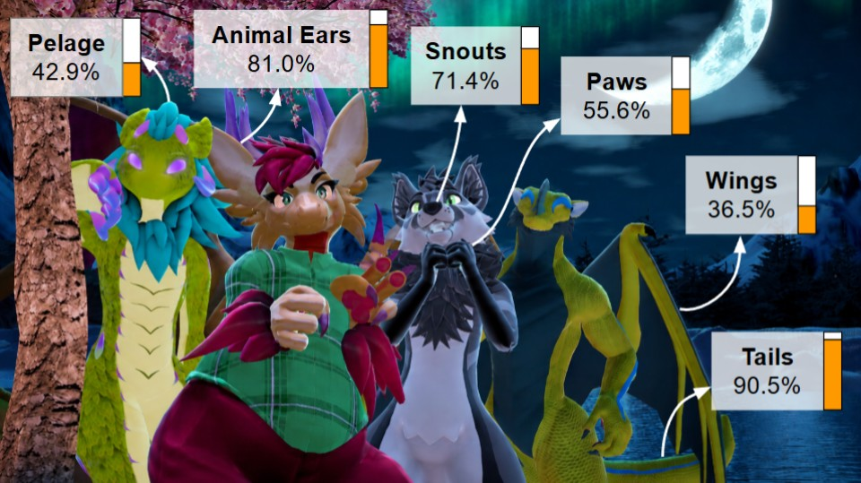

Abstract
Many social VR users recreationally embody non-human body parts on platforms such as VRChat. Non-human and beyond-human avatars are a personally important creative outlet for many individuals and communities, such as the furry fandom and the kemonomimi community. To understand which non-human body parts are commonly embodied in social VR, we conducted a targeted survey (n = 63) distributed through social media channels and at an in-person convention, which asked respondents to describe any non-human body parts they embody, or see other users embodying, in social VR. We also collected optional demographic information from respondents, such as frequency of social VR use, age, gender identity, sexual orientation, location, and ethnicity. We present the findings of our survey in this extended abstract and its associated poster. Our results offer insights into an underexplored community of VR users, and motivate future work on spatial interaction methods for embodying non-human avatars.